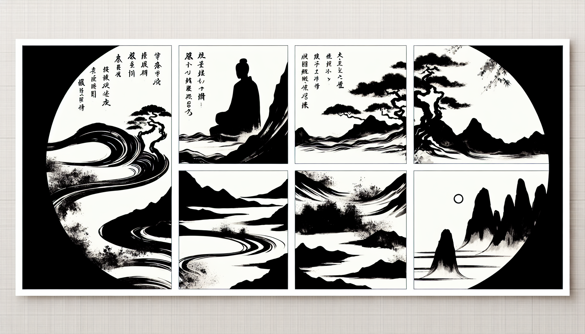

十二巻 巻一覧
正法眼藏第3 袈裟功徳
本ページは tools/gen_web_volumes.py が doc/正法眼蔵.txt から冒頭を抜粋して生成しています。図・詳細解説は今後の手編集で拡張できます。
出典（原文）: https://shomonji.or.jp/zazen/doc/genzou.html
この巻の位置づけ（学習メモ）
道元『正法眼蔵』十二巻の第3篇「袈裟功徳」です。禅籍・経典への引用や語の行間が重なりやすいので、一度ですべてを要約に還元しない読み方を推奨します。問答 Bot では巻スコープにこの題名を含めると応答が安定しやすいことがあります。
語彙の足場
- 題名語：巻題「袈裟功徳」は、道元が本章で特に扱う論点の看板です。辞書義だけに固定せず、本文中の用例で意味を確かめます。
- 引用と典故：公案・経文の引用は、一字一句の照応（何に答えているか）を押さえると全体が見えやすくなります。
- 学び方：冒頭だけでも音読し、分からない箇所は印を付けて後から問うとよいです。
本文（冒頭・自動抜粋）
出典はリポジトリ内 doc/正法眼蔵.txt です。原文の参照元: https://shomonji.or.jp/zazen/doc/genzou.html
佛佛祖祖正傳の衣法、まさしく震旦國に正傳することは、嵩嶽の高祖のみなり。高祖は、
釋迦牟尼佛より第二十八代の祖なり。西天二十八傳、嫡嫡あひつたはれり。二十八祖、したしく震旦にいりて初祖たり。震旦國人五傳して、曹溪にいたりて三十三代の祖なり、これを六祖と稱ず。第三十三代の祖大鑑禪師、この衣法を黄梅山にして夜半に正傳し、一生護持、いまなほ曹溪山寶林寺に安置せり。
諸代の帝王、あひつぎて内裡に奉請し、供養禮拜す、神物護持せるものなり。唐朝中宗、肅宗、代宗、しきりに歸内供養しき。奉請のとき、奉送のとき、ことさら勅使をつかはし、詔をたまふ。代宗皇帝、あるとき佛衣を曹溪山におくりたてまつる詔にいはく、
今遣鎭國大將軍劉崇景頂戴而送。朕爲之國寶。卿可於本寺安置、令僧衆親承宗旨者、嚴加守護、勿令遺墜（今、鎭國大將軍劉崇景をして、頂戴して送らしむ。朕、之を國寶とす。卿、本寺に安置し、僧衆の親しく宗旨を承けし者をして嚴しく守護を加へ、遺墜せしむることなからしむべし）。
まことに無量恆河沙の三千大千世界を統領せんよりも、佛衣現在の小國に王としてこれを見聞供養したてまつらんは、生死のなかの善生、最勝の生なるべし。佛化のおよぶところ、三千界いづれのところか袈裟なからん。しかありといへども、嫡嫡面授して佛袈裟を正傳せるは、ただひとり嵩嶽の曩祖のみなり、旁出は佛袈裟をさづけられず。二十七祖の旁出、跋陀婆羅菩薩の傳、まさに肇法師におよぶといへども、佛袈裟の正傳なし。震旦の四祖大師、また牛頭山の法融禪師をわたすといへども、佛袈裟を正傳せず。
しかあればすなはち、正嫡の相承なしといへども、如來の正法その功徳むなしからず、千古萬古みな利益廣大なり。正嫡相承せらんは、相承なきとひとしかるべからず。
しかあればすなはち、人天もし袈裟を受持せんは、佛祖相傳の正傳を傳受すべし。印度震旦、正法像法のときは、在家なほ袈裟を受持す。いま遠方邊土の澆季には、剃除鬚髪して佛弟子と稱ずる、袈裟を受持せず、いまだ受持すべきと信ぜず、しらず、あきらめず、かなしむべし。いはんや體色量をしらんや、いはんや著用の法をしらんや。
袈裟はふるくより解脱服と稱ず、業障、煩惱障、報障等、みな解脱すべきなり。龍もし一縷をうれば三熱をまぬかる、牛もし一角にふるればその罪おのづから消滅す。諸佛成道のとき、かならず袈裟を著す。しるべし、最尊最上の功徳なりといふこと。
まことにわれら邊地にうまれて末法にあふ、うらむべしといへども、佛佛嫡嫡相承の衣法にあふたてまつる、いくそばくのよろこびとかせん。いづれの家門か、わが正傳のごとく釋尊の衣法ともに正傳せる。これにあふたてまつりて、たれか恭敬供養せざらん。たとひ一日に無量恆河沙の身命をすてても、供養したてまつるべし、なほ生生世世の値遇頂戴、供養恭敬を發願すべし。われら佛生國をへだつること十萬餘里の山海はるかにして通じがたしといへども、宿善のあひもよほすところ、山海に擁塞せられず、邊鄙の愚蒙きらはるることなし。この正法にあふたてまつり、あくまで日夜に修習す、この袈裟を受持したてまつり、常恆に頂戴護持す。ただ一佛二佛のみもとにして、功徳を修せるのみならんや、すでに恆河沙等の諸佛のみもとにして、もろもろの功徳を修習せるなるべし。たとひ自己なりといふとも、たふとぶべし、隨喜すべし。祖師傳法の深恩、ねんごろに報謝すべし。畜類なほ恩を報ず、人類いかでか恩をしらざらん。もし恩をしらずは、畜類よりも愚なるべし。
この佛衣佛法の功徳、その傳佛正法の祖師にあらざれば、餘輩いまだあきらめず、しらず。諸佛のあとを欣求すべくは、まさにこれを欣樂すべし。たとひ百千萬代ののちも、この正傳を正傳とすべし。これ佛法なるべし、證驗まさにあらたならん。水を乳に入るるに相似すべからず。皇太子の帝位に卽位するがごとし。かの合水の乳なりとも、乳をもちゐん時は、この乳のほかにさらに乳なからんには、これをもちゐるべし。たとひ水と合せずとも、あぶらをもちゐるべからず、うるしをもちゐるべからず、さけをもちゐるべからず。この正傳もまたかくのごとくならん。たとひ凡師の庸流なりとも、正傳あらんは用乳のよろしきときなるべし。いはんや佛佛祖祖の正傳は、皇太子の卽位のごとくなるなり。俗なほいはく、先王の法服にあらざれば服せず。佛子いづくんぞ佛衣にあらざらんを著せん。後漢孝明皇帝、永平十年よりのち、西天東地に往還する出家在家、くびすをつぎてたえずといへども、西天にして佛佛祖祖正傳の祖師にあふといはず。如來より面授相承の系譜なし。ただ經論師にしたがうて、梵本の經教を傳來せるなり。佛法正嫡の祖師にあふといはず、佛袈裟相傳の祖師ありとかたらず。あきらかにしりぬ、佛法の閫奥にいらざりけりといふことを。かくのごときのひと、佛祖正傳のむね、あきらめざるなり。
釋迦牟尼如來、正法眼藏無上菩提を、摩訶迦葉に附授しましますに、迦葉佛正傳の袈裟、ともに傳授しまします。嫡嫡相承して曹溪山大鑑禪師にいたる、三十三代なり。その體色量、親傳せり。それよりのち、靑原南嶽の法孫、したしく傳法しきたり、祖宗の法を搭し、祖宗の法を製す。浣洗の法および受持の法、この嫡嫡面授の堂奥に參學せざれば、しらざるところなり。
袈裟言有三衣、五條衣七條衣、九條衣等大衣也。上行之流、唯受此三衣、不畜餘衣、唯用三衣、供身事足（袈裟は言く三衣有り、五條衣七條衣、九條衣等の大衣也。上行の流は、唯此の三衣を受けて餘衣を畜へず、唯三衣を用て身に供じて事足す）。
若經營作務、大小行來、著五條衣。爲諸善事入衆、著七條衣。教化人天、令其敬信、須著九條等大衣（若し經營作務、大小の行來には、五條衣を著す。諸の善事を爲し入衆せんには、七條衣を著す。人天を教化し、其をして敬信せしめんには、須らく九條等の大衣を著すべし）。
又在屏處、著五條衣、入衆之時、著七條衣。若入王宮聚落、須著大衣（又屏處に在らんには五條衣を著し、入衆の時には七條衣を著す。若し王宮聚落に入らんには、須らく大衣を著すべし）。
又復調和熅燸之時、著五條衣、寒冷之時、加著七條衣、寒苦嚴切、加以著大衣（又復調和熅燸の時には五條衣を著し、寒冷の時には七條衣を加著し、寒苦嚴切ならんには加ふるに以て大衣を著す）。
故往一時、正冬入夜、天寒裂竹。如來於彼初夜分時、著五條衣。夜久轉寒、加七條衣、於夜後分、天寒轉盛、加以大衣（故往の一時、正冬に夜に入りて、天寒くして竹を裂く。如來、彼の初夜の分時に於て、五條衣を著したまひき。夜久しく轉た寒きには七條衣を加へ、夜の後分に於て、天寒轉た盛んなるには、加ふるに大衣を以てしたまひき）。
佛便作念、未來世中、不忍寒苦、諸善男子、以此三衣、足得充身（佛便ち念を作したまはく、未來世の中に、寒苦を忍びざるには、諸の善男子、此の三衣を以て、足らはして充身することを得ん）。
搭袈裟法
偏袒右肩、これ常途の法なり。通兩肩搭の法あり、如來および耆年老宿の儀なり。兩肩を通ずといふとも、胸臆をあらはすときあり、胸臆をおほふときあり。通兩肩搭は六十條衣以上の大袈裟のときなり。搭袈裟のとき、兩端ともに左臂肩にかさねかくるなり。前頭は左端のうへにかけて臂外にたれたり。大袈裟のとき、前頭を左肩より通じて背後にいだしたれたり。このほか種種の著袈裟の法あり、久參咨問すべし。
梁陳隋唐宋あひつたはれて數百歳のあひだ、大小兩乘の學者、おほく講經の業をなげすてて、究竟にあらずとしりて、すすみて佛祖正傳の法を習學せんとするとき、かならず從來の弊衣を脱落して、佛祖正傳の袈裟を受持するなり。まさしくこれ捨邪歸正なり。
如來の正法は、西天すなはち法本なり。古今の人師、おほく凡夫の情量局量の小見をたつ。佛界衆生界、それ有邊無邊にあらざるがゆゑに、大小乘の教行人理、いまの凡夫の局量にいるべからず。しかあるに、いたづらに西天を本とせず、震旦國にして、あらたに局量の小見を今案して佛法とせる、道理しかあるべからず。
しかあればすなはち、いま發心のともがら、袈裟を受持すべくは、正傳の袈裟を受持すべし。今案の新作袈裟を受持すべからず。正傳の袈裟といふは、少林曹溪正傳しきたれる、如來の嫡嫡相承なり。一代も虧闕なし。その法子法孫の著しきたれる、これ正傳袈裟なり。唐土の新作は正傳にあらず。いま古今に、西天よりきたれる僧徒の所著の袈裟、みな佛祖正傳の袈裟のごとく著せり。一人としても、いま震旦新作の律學のともがらの所製の袈裟のごとくなるなし。くらきともがら、律學の袈裟を信ず、あきらかなるものは抛却するなり。
おほよそ、佛佛祖祖相傳の袈裟の功徳、あきらかにして信受しやすし。正傳まさしく相承せり。本樣まのあたりつたはれり、いまに現在せり。受持しあひ嗣法していまにいたる。受持せる祖師、ともにこれ證契傳法の師資なり。
しかあればすなはち、佛祖正傳の作袈裟の法によりて作法すべし。ひとりこれ正傳なるがゆゑに。凡聖人天龍神、みなひさしく證知しきたれるところなり。この法の流布にむまれあひて、ひとたび袈裟を身體におほひ、刹那須臾も受持せん、すなはちこれ決定成無上菩提の護身符子ならん。一句一偈を身心にそめん、長劫光明の種子として、つひに無上菩提にいたる。一法一善を身心にそめん、亦復如是なるべし。心念も刹那生滅し無所住なり、身體も刹那生滅し無所住なりといへども、所修の功徳、かならず熟脱のときあり。袈裟また作にあらず無作にあらず、有所住にあらず無所住にあらず、唯佛與佛の究盡するところなりといへども、受持する行者、その所得の功徳、かならず成就するなり、かならず究竟するなり。もし宿善なきものは、一生二生乃至無量生を經歴すといふとも、袈裟をみるべからず、袈裟を著すべからず、袈裟を信受すべからず、袈裟をあきらめしるべからず。いま震旦國日本國をみるに、袈裟をひとたび身體に著することうるものあり、えざるものあり。貴賤によらず、愚智によらず。はかりしりぬ、宿善によれりといふこと。
しかあればすなはち、袈裟を受持せんは宿善よろこぶべし、積功累徳うたがふべからず。いまだえざらんはねがふべし、今生いそぎ、そのはじめて下種せんことをいとなむべし。さはりありて受持することえざらんものは、諸佛如來、佛法僧の三寶に、慚愧懺悔すべし。他國の衆生いくばくかねがふらん、わがくにも震旦國のごとく、如來の衣法まさしく正傳親臨せましと。おのれがくにに正傳せざること、慚愧ふかかるらん、かなしむうらみあるらん。われらなにのさいはひありてか、如來世尊の衣法正傳せる法にあひたてまつれる。宿殖般若の大功徳力なり。
いま末法惡時世は、おのれが正傳なきをはぢず、他の正傳あるをそねむ、おもはくは魔黨ならん。おのれがいまの所有所住は、前業にひかれて眞實にあらず。ただ正傳佛法に歸敬せん、すなはちおのれが學佛の實歸なるべし。
およそしるべし、袈裟はこれ諸佛の恭敬歸依しましますところなり。佛身なり、佛心なり。解脱服と稱じ、福田衣と稱じ、無相衣と稱じ、無上衣と稱じ、忍辱衣と稱じ、如來衣と稱じ、大慈大悲衣と稱じ、勝幡衣と稱じ、阿耨多羅三藐三菩提衣と稱ず。まさにかくのごとく受持頂戴すべし。かくのごとくなるがゆゑに、こころにしたがうてあらたむべきにあらず。
その衣財、また絹布よろしきにしたがうてもちゐる。かならずしも布は淸淨なり、絹は不淨なるにあらず。布をきらうて絹をとる所見なし、わらふべし。諸佛の常法、かならず糞掃衣を上品とす。
糞掃に十種あり、四種あり。
いはゆる火燒、牛嚼、鼠嚙、死人衣等。五印度人、如此等衣、棄之巷野。事同糞掃、名糞掃衣。行者取之、浣洗縫治、用以供身（火燒、牛嚼、鼠嚙、死人衣等なり。五印度の人、此の如き等の衣、之を巷野に棄つ。事、糞掃に同じ、糞掃衣と名づく。行者之を取つて、浣洗縫治して、用以て身に供ず）。
そのなかに絹類あり、布類あり。絹布の見をなげすてて、糞掃を參學すべきなり。
糞掃衣は、むかし阿耨達池にして浣洗せしに、龍王讃歎、雨花禮拜しき。
小乘教師また化絲の説あり、よところなかるべし、大乘人わらふべし。いづれか化絲にあらざらん。なんぢ化をきくみみを信ずとも、化をみる目をうたがふ。
しるべし、糞掃をひろふなかに、絹に相似なる布あらん、布に相似なる絹あらん。土俗萬差にして造化はかりがたし、肉眼のよくしるところにあらず。かくのごときのものをえたらん、絹布と論ずべからず、糞掃と稱ずべし。たとひ人天の糞掃と生長せるありとも、有情ならじ、糞掃なるべし。たとひ松菊の糞掃と生長せるありとも、非情ならじ、糞掃なるべし。糞掃の絹布にあらず、金銀珠玉にあらざる道理を信受するとき、糞掃現成するなり。絹布の見解いまだ脱落せざれば、糞掃也未夢見在なり。
ある僧かつて古佛にとふ、黄梅夜半の傳衣、これ布なりとやせん、絹なりとやせん。畢竟じてなにものなりとかせん。
古佛いはく、これ布にあらず、これ絹にあらず。
しるべし、袈裟は絹布にあらざる、これ佛道の玄訓なり。
商那和修尊者は第三の附法藏なり、むまるるときより衣と倶生せり。この衣、すなはち在家のときは俗服なり、出家すれば袈裟となる。また鮮白比丘尼、發願施氎ののち、生生のところ、および中有、かならず衣と倶生せり。今日釋迦牟尼佛にあふたてまつりて出家するとき、生得の俗衣、すみやかに轉じて袈裟となる。和修尊者におなじ。あきらかにしりぬ、袈裟は絹布等にあらざること。いはんや佛法の功徳、よく身心諸法を轉ずること、それかくのごとし。われら出家受戒のとき、身心依正すみやかに轉ずる道理あきらかなれど、愚蒙にしてしらざるのみなり。諸佛の常法、ひとり和修鮮白に加して、われらに加せざることなきなり。隨分の利益、うたがふべからざるなり。
かくのごとくの道理、あきらかに功夫參學すべし。善來得戒の披體の袈裟、かならずしも布にあらず、絹にあらず。佛化難思なり、衣裏の寶珠は算沙の所能にあらず。
諸佛の袈裟の體色量の有量無量、有相無相、あきらめ參學すべし。西天東地、古往今來の祖師、みな參學正傳せるところなり。祖祖正傳のあきらかにしてうたがふところなきを見聞しながら、いたづらにこの祖師に正傳せざらんは、その意樂ゆるしがたからん。愚癡のいたり、不信のゆゑなるべし。實をすてて虛をもとめ、本をすてて末をねがふものなり。これ如來を輕忽したてまつるならん。菩提心をおこさんともがら、かならず祖師の正傳を傳受すべし。われらあひがたき佛法にあひたてまつるのみにあらず、佛袈裟正傳の法孫としてこれを見聞し、學習し、受持することをえたり。すなはちこれ如來をみたてまつるなり。佛説法をきくなり、佛光明にてらさるるなり、佛受用を受用するなり。佛心を單傳するなり、佛髓をえたるなり。まのあたり釋迦牟尼佛の袈裟におほはれたてまつるなり。釋迦牟尼佛まのあたりわれに袈裟をさづけましますなり。ほとけにしたがふたてまつりて、この袈裟はうけたてまつれり。
浣袈裟法
袈裟をたたまず、淨桶にいれて、香湯を百沸して、袈裟をひたして、一時ばかりおく。またの法、きよき灰水を百沸して、袈裟をひたして、湯のひややかになるをまつ。いまはよのつねに灰湯をもちゐる。灰湯、ここにはあくのゆといふ。灰湯さめぬれば、きよくすみたる湯をもて、たびたびこれを浣洗するあひだ、兩手にいれてもみあらはず、ふまず。あかのぞこほり、あぶらのぞこほるを期とす。そののち、沈香栴檀香等を冷水に和してこれをあらふ。そののち淨竿にかけてほす。よくほしてのち、摺襞してたかく安じて、燒香散花して、右遶數匝して禮拜したてまつる。あるいは三拜、あるいは六拜、あるいは九拜して、胡跪合掌して、袈裟を兩手にささげて、くちに偈を誦してのち、たちて如法に著したてまつる。
世尊告大衆言、我往昔在寶藏佛所時、爲大悲菩薩。爾時大悲菩薩摩訶薩、在寶藏佛前、而發願言（世尊大衆に告げて言はく、我れ往昔寶藏佛の所に在りし時、大悲菩薩たり。爾の時に大悲菩薩摩訶薩、寶藏佛の前に在りて發願して言さく）、
世尊、我成佛已、若有衆生入我法中出家著袈裟者、或犯重戒、或行邪見、若於三寶輕毀不信、集諸重罪、比丘、比丘尼、優婆塞、優婆夷、若於一念中、生恭敬心、尊重僧伽梨衣、生恭敬心、尊重世尊或於法僧、世尊如是衆生、乃至一人、不於三乘得受記莂、而退轉者、則爲欺誑十方世界、無量無邊阿僧祇等、現在諸佛。必定不成阿耨多羅三藐三菩提（世尊、我成佛し已らんに、若し衆生有つて、我が法の中に入りて、出家して袈裟を著する者の、或いは重戒を犯し、或いは邪見を行じ、若しは三寶に於て輕毀して信ぜず、諸の重罪を集たらん比丘、比丘尼、優婆塞、優婆夷、若し一念の中に恭敬心を生じて、僧伽梨衣を尊重し、恭敬心を生じて世尊或いは法僧に於て尊重せん。世尊、是の如くの衆生、乃至一人も、三乘に於て記莂を受くることを得ずして而も退轉せば、則ち爲十方世界の無量無邊阿僧祇等の現在の諸佛を欺誑したてまつるなり。必定じて阿耨多羅三藐三菩提を成らじ）。
世尊、我成佛已來、諸天龍鬼神、人及非人、若能於此著袈裟者、恭敬供養、尊重讃歎。其人若得見此袈裟少分、卽得不退於三乘中（世尊、我れ成佛してより已來、諸の天龍鬼神、人及び非人、若し能く此の著袈裟の者に於て、恭敬供養し、尊重讃歎せん。其の人若し此の袈裟の少分を見ることを得ば、卽ち三乘の中に於て不退なることを得ん）。
若有衆生、爲飢渇所逼、若貧窮鬼神、下賤諸人、乃至餓鬼衆生、若得袈裟少分乃至四寸、卽得飮食充足、隨其所願、疾得成就（若し衆生有つて、飢渇の爲に逼められん、若しは貧窮の鬼神、下賤の諸人、乃至餓鬼の衆生までも、若し袈裟の少分の乃至四寸を得たらんには、卽ち飮食充足することを得ん。その所願に隨ひて疾く成就することを得ん）。
若有衆生、共相違反、起怨賊想、展轉鬪諍、若諸天龍鬼神、乾闥婆、阿修羅、迦樓羅、緊那羅、摩睺羅伽、狗辨荼、毘舍遮、人及非人、共鬪諍時、念此袈裟、依袈裟力、尋生悲心、柔軟之心、無怨賊心、寂滅之心、調伏善心、還得淸淨（若し衆生有つて、共に相違反し、怨賊の想を起して、展轉鬪諍せん、若しは諸の天龍、鬼神、乾闥婆、阿修羅、迦樓羅、緊那羅、摩睺羅伽、狗辨荼、毘舍遮、人及非人、共に鬪諍せん時、此の袈裟を念ぜば、袈裟の力に依りて、尋いで悲心、柔軟の心、無怨賊の心、寂滅の心、調伏の善心を生じて、還た淸淨なることを得ん）。
有人若在兵甲鬪訟斷事之中、持此袈裟少分至此輩中、爲自護故、供養恭敬尊重、是諸人等、無能侵毀觸嬈輕弄。常得勝他、過此諸難（人有つて若し兵甲鬪訟斷事の中に在らんに、此の袈裟の少分を持つて此の輩の中に至らん、自護の爲の故に、供養し恭敬し尊重せん、是の諸人等、能く侵毀觸嬈輕弄すること無けん。常に他に勝つことを得て、此の諸難を過ぎん）。
世尊、若我袈裟、不能成就如是五事聖功徳者、則爲欺誑十方世界、無量無邊阿僧祇等、現在諸佛。未來不應成就阿耨多羅三藐三菩提作佛事也。沒失善法、必定不能破壞外道（世尊、若し我が袈裟の、是の如くの五事の聖功徳を成就すること能はずは、則ち十方世界の無量無邊阿僧祇等の現在したまふ諸佛を欺誑したてまつるなり。未來に應に阿耨多羅三藐三菩提を成就し、佛事を作すべからず。善法を沒失し、必定じて外道を破壞すること能はじ）。
善男子、爾時寶藏如來、申金色右臂、摩大悲菩薩頂、讃言、善哉善哉、大丈夫、汝所言者、是大珍寶、是大賢善。汝成阿耨多羅三藐三菩提已、是袈裟服、能成就此五聖功徳、作大利益（善男子、爾の時に寶藏如來、金色の右臂を申べて、大悲菩薩の頂を摩でて讃めて言はく、善哉善哉、大丈夫、汝が所言は、是れ大珍寶なり、是れ大賢善なり。汝、阿耨多羅三藐三菩提を成じ已らんに、是の袈裟服は、能く此の五聖功徳を成就して大利益を作さん）。
善男子、爾時大悲菩薩摩訶薩、聞佛讃歎已、心生歡喜、踊躍無量。因佛申此金色之臂、長作合縵。其手柔軟、猶如天衣、摩其頭已、其身卽變、状如僮子二十歳（善男子、爾の時に大悲菩薩摩訶薩、佛の讃歎したまふを聞き已りて、心に歡喜を生じ、踊躍すること無量なり。因みに佛此の金色の臂を申べたまふに、長作合縵なり。その手柔軟なること、猶ほ天衣の如く、其の頭を摩で已るに、其の身卽ち變じて、状僮子二十歳ばかりの人の如し）。
善男子、彼會大衆、諸天龍神乾闥婆、人及非人、叉手恭敬、向大悲菩薩、供養種種華、乃至伎樂而供養之、復種種讃歎已、默然而住（善男子、彼の會の大衆、諸天龍神乾闥婆、人及非人、叉手恭敬し、大悲菩薩に向ひて種種の花を供養し、乃至伎樂して之を供養し、復た種種に讃歎し已りて、默然として住せり）。
如來在世より今日にいたるまで、菩薩聲聞の經律のなかより、袈裟の功徳をえらびあぐるとき、かならずこの五聖功徳をむねとするなり。
まことにそれ、袈裟は三世諸佛の佛衣なり。その功徳無量なりといへども、釋迦牟尼佛の法のなかにして袈裟をえたらんは、餘佛の法のなかにして袈裟をえんにもすぐれたるべし。ゆゑいかんとなれば、
釋迦牟尼佛むかし因地のとき、大悲菩薩摩訶薩として、寶藏佛のみまへにて五百大願をたてましますとき、ことさらこの袈裟の功徳におきて、かくのごとく誓願をおこしまします。その功徳、さらに無量不可思議なるべし。しかあればすなはち、世尊の皮肉骨髓いまに正傳するといふは袈裟衣なり。正法眼藏を正傳する祖師、かならず袈裟を正傳せり。この衣を傳持し頂戴する衆生、かならず二三生のあひだに得道せり。たとひ戲笑のため利益のために身を著せる、かならず得道の因緣なり。
龍樹祖師曰、復次佛法中出家人、雖破戒墮罪、罪畢得解脱、如優鉢羅華比丘尼本生經中説（復た次に佛法中の出家人は、破戒して墮罪すと雖も、罪畢りぬれば解脱を得ること、優鉢羅華比丘尼本生經の中に説くが如し）。
佛在世時、此比丘尼、得六神通阿羅漢。入貴人舍、常讃出家法、語諸貴人婦女言、姉妹可出家（佛在世の時、此の比丘尼、六神通阿羅漢を得たり。貴人の舍に入りて、常に出家の法を讃めて、諸の貴人婦女に語りて言く、姉妹、出家すべし）。
諸貴婦女言、我等少壯容色盛美、持戒爲難、或當破戒（我等少壯くして容色盛美なり、持戒を難しと爲す、或いは當に破戒すべし）。
比丘尼言、破戒便破、但出家（戒を破らば便ち破すべし、但だ出家すべし）。
問言、破戒當墮地獄、云何可破（戒を破らば當に地獄に墮すべし、云何が破すべき）。
答曰、墮地獄便墮（地獄に墮さば便ち墮すべし）。
諸貴婦女笑之言、地獄受罪、云何可墮（地獄にては罪を受く、云何が墮すべき）。
比丘尼言、我自憶念本宿命時、作戲女、著種種衣服而説舊語。或時著比丘尼衣、以爲戲笑。以是因緣故、迦葉佛時、作比丘尼。時自恃貴姓端正生憍慢、而破禁戒。破禁戒罪故、墮地獄受種種罪。受畢竟價釋迦牟尼佛出家、得六神通阿羅漢道（比丘尼言く、我れ自ら本宿命の時を憶念するに、戲女と作り、種種の衣服を著して舊語を説きき。或る時比丘尼衣を著して、以て戲笑と爲しき。是の因緣を以ての故に、迦葉佛の時、比丘尼と作りぬ。時に自ら貴姓端正なるを恃んで憍慢を生じ、而も禁戒を破りつ。禁戒を破りし罪の故に、地獄に墮して種種の罪を受けき。受け畢竟りて釋迦牟尼佛に値ひたてまつりて出家し、六神通阿羅漢道を得たり）。
以是故知。出家受戒、雖復破戒、以戒因緣故、得阿羅漢道。若但作惡無戒因緣、不得道也。我乃昔時世世墮地獄、從地獄出爲惡人。惡人死還入地獄、都無所得。今以證知、出家受戒、雖復破戒、以是因緣可得道果（是れを以ての故に知りぬ。出家受戒せば、復た破戒すと雖も、戒の因緣を以ての故に、阿羅漢道を得。若し但だ惡を作して戒の因緣無からんには、道を得ざるなり。我れ乃ち昔時、世世に地獄に墮し、地獄より出でては惡人爲り。惡人死しては還た地獄に入りて、都て所得無かりき。今以て證知す、出家受戒せば、復た破戒すと雖も、是の因緣を以て道果を得べしといふことを）。
この蓮花色阿羅漢得道の初因、さらに他の功にあらず。ただこれ袈裟を戲笑のためにその身に著せし功徳によりて、いま得道せり。二生に迦葉佛の法にあふたてまつりて比丘尼となり、三生に釋迦牟尼佛にあふたてまつりて大阿羅漢となり、三明六通を具足せり。三明とは、天眼宿命漏盡なり。六通とは、神境通、他心通、天眼通、天耳通、宿命通、漏盡通なり。まことにそれただ作惡人とありしときは、むなしく死して地獄にいる。地獄よりいでてまた作惡人となる。戒の因緣あるときは、禁戒を破して地獄におちたりといへども、つひに得道の因緣なり。いま戲笑のため袈裟を著せる、なほこれ三生に得道す。いはんや無上菩提のために淸淨の信心をおこして袈裟を著せん、その功徳、成就せざらめやは。いかにいはんや一生のあひだ受持したてまつり、頂戴したてまつらん功徳、まさに廣大無量なるべし。
もし菩提心をおこさん人、いそぎ袈裟を受持頂戴すべし。この好世にあふて佛種をうゑざらん、かなしむべし。南州の人身をうけて、釋迦牟尼佛の法にあふたてまつり、佛法嫡嫡の祖師にむまれあひ、單傳直指の袈裟をうけたてまつりぬべきを、むなしくすごさん、かなしむべし。
いま袈裟正傳は、ひとり祖師正傳これ正嫡なり、餘師の肩をひとしくすべきにあらず。相承なき師にしたがふて袈裟を受持する、なほ功徳甚深なり。いはんや嫡嫡面授しきたれる正師に受持せん、まさしき如來の法子法孫ならん。まさに如來の皮肉骨髓を正傳せるなるべし。おほよそ袈裟は、三世十方の諸佛正傳しきたれること、いまだ斷絶せず。三世十方の諸佛菩薩、聲聞緣覺、おなじく護持しきたれるところなり。
袈裟をつくるには麁布を本とす、麁布なきがごときは細布をもちゐる。麁細の布、ともになきには絹素をもちゐる、絹布ともになきがごときは綾羅等をもちゐる。如來の聽許なり。絹布綾羅等の類、すべてなきくにには、如來また皮袈裟を聽許しまします。
おほよそ袈裟、そめて靑黄赤黒紫色ならしむべし。いづれも色のなかの壞色ならしむ。如來はつねに肉色の袈裟を御しましませり。これ袈裟色なり。初祖相傳の佛袈裟は靑黒色なり、西天の屈眴布なり、いま曹溪山にあり。西天二十八傳し、震旦五傳せり。いま曹谿古佛の遺弟、みな佛衣の故實を傳持せり、餘僧のおよばざるところなり。
おほよそ衣に三種あり。
一者糞掃衣、二者毳衣、三者衲衣
なり。糞掃は、さきにしめすがごとし。毳衣者、鳥獸細毛、これをなづけて毳とす。
図解（4コマ・AI生成）
教義の根拠は本文・出典に従い、漫画は比喩の補助に留めてください。

深掘り（読解のコツ）
- 道元文は定義の羅列に見えても、多くの場合誤解への遮断と正伝の姿勢が背骨になっています。
- 「当体」「現成」「即」などの語が出たら、その巻独自の差別相にどう接続しているかをメモしておくとよいです。